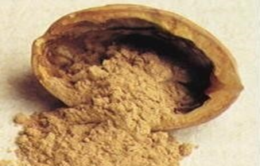
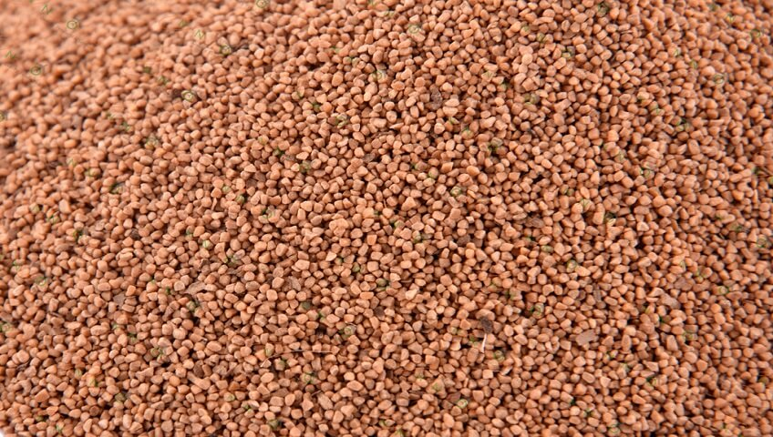
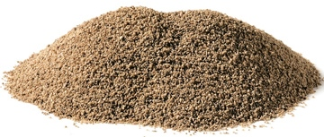

Product Range
Walnut Shell

We are offering walnut shell. Walnut shell is utilized to control lost circulation in water oil base drilling fluids. It may be utilized by itself in re-circulated fluids or in pill form with fibrous flake material. A lost circulation material of ground nutshell is available in three grades, fine, medium, and coarse, ranging in size from 100 mesh to 6 mesh. Walnut shells are a versatile abrasive media widely used in blasting, tumbling, cleaning, polishing, filtration, cosmetics, as well as non-skid applications and filler applications. Walnut shells are crushed, ground and classified to standard mesh sizes that range from coarse grio fine powders.
Walnut Shell Medium

Walnut shell media (Figure 1) is an all-natural, biodegradable, durable material with excellent strength characteristics. It has a specific gravity of 1.2-1.4 and a hardness of 3.5 MOH and 91 Rockwell.
Walnut shell performs well in a variety of pH and temperature conditions and are resistant to fermentation. They are reusable and reclaimable and thus serve as a suitable blast media in outdoor applications. Composition Materials has supplied walnut shell products globally for over 60 years.
Walnut Shell Blasting, In walnut shell blasting, wheel blast or air blast equipment is used to
remove paints and coatings from buildings, cars, boats, furniture, fiberglass, steel, etc. Walnut shell blasting offers the aggressiveness required to remove hard paints and coatings without damaging substrates. The process also enables selective coating removal, wherein the top coating can be removed without affecting the underlying coatings. In blast operations, a number of factors are involved and they include safety, nozzle distance, media particle size, and p.s.i. Walnut shell blasting does not cause silicosis and hence provides a perfect alternative to sandblasting. Walnut Shells for Deflashing, Polishing & Tumbling Walnut shells are also used to deflash parts, as well as for tumbling and polishing brass, metal, plastics and hard rubber. In tumbling applications, a polishing compound is often mixed with the walnut shells.
Walnut Shell Flour

Ground walnut shell grits and flours are made for the construction, furniture, adhesives, paint, plywood, resin, rubber, paint and cosmetic industries. For anti-slip applications, ground walnut shell serves as a suitable additive for stairs, decks, pools, floors, and ramps. In addition, walnut shell flour is a preferred additive in rubber and plastics compound suppliers & exports. Moreover, walnut shells are employed in burn-out applications to improve porosity in ceramics.
 This site is under construction.
This site is under construction.